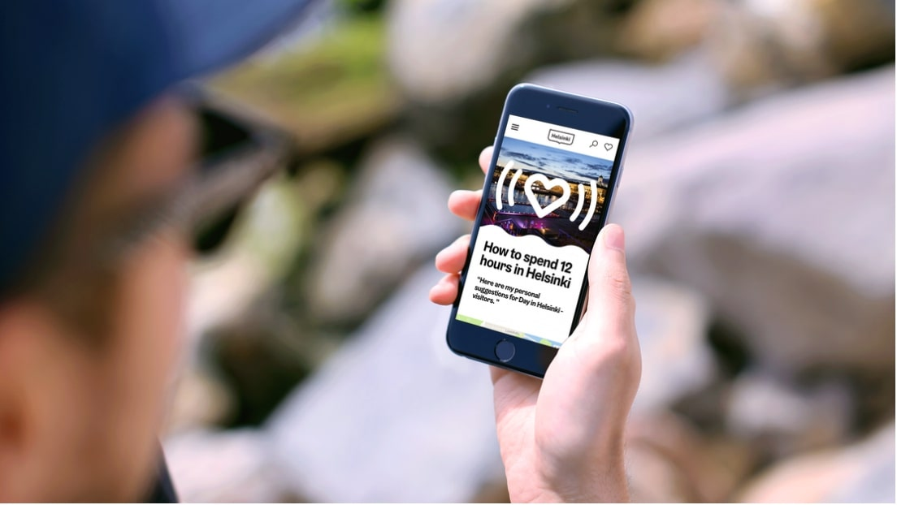

Hospitality & Leisure project
My Helsinki: Helping people find the best of Helsinki
Helsinki is the Baltic Sea’s best-kept secret. With a sizzling food scene and a thriving start-up ecosystem, the city has a lot to offer—and yet it’s still overshadowed by its neighbors Stockholm and Copenhagen as a destination for visitors. In response, the city has been evolving its marketing to highlight the unique experiences locals and visitors enjoy in Helsinki, including the opportunities and quality of life Helsinki can offer expats.
Idean partnered with the City of Helsinki to build a digital service that would support this mission and help people find the best of the city. It would also be the first opportunity to bring to life Helsinki’s new brand identity. We were thrilled to help our hometown shine!
Our Guide to Service Design
One of the reasons for My Helsinki’s success is the way it was designed – we listened to the end-users and designed a platform based on their needs. This methodology is called service design. Read our Guide on why and how to utilize service design in your projects:
Opportunity
While Helsinki is one of the most livable cities in the world, finding the best things to do isn’t easy and the city’s attractions lack the international renown of its neighbors among visitors and expats.
Outcome
Your local guide to Helsinki: a vibrant digital destination that connects people to share their best experiences of the city—useful for locals but accessible for everyone.
A trailer about #myhelsinki experience. Video made in collaboration with Idean and Miltton.
Defining the experience
To design a useful and inspiring service, we needed to understand and carefully listen to the motivations of Helsinki’s visitors and residents–thus, following the approach through service design methdology. We interviewed visitors and city employees about their experiences exploring Helsinki, and the discussions helped us understand their diverse perspectives. One of the key insights was that in the past, many of the activities the city has to offer were discovered through different sources. We wanted to fix that by bringing all the options into one, fun and collaborative, platform.
Gathering insights
To connect with city employees, locals, visitors, and expats, we set up a co-working space in Helsinki Lab. It was a glass room within the lobby of the city hall, and filled it with our rough drafts, post-its, and Finnish chocolate.
We ran three two-week design sprints, including facilitating several co-design workshops with a variety of stakeholders, to craft the core flows and features. At the end of each sprint, we tested our latest prototypes with visitors and locals, live-streamed to Helsinki Lab, where our team could observe people’s reactions in real-time. This feedback was invaluable for steering us in the right direction.
Helsinki City Hall, or Helsingin kaupungintalo, provided a unique locale to work and conduct research.
Building a product
Development of site was done in agile sprints in close cooperation with developers, designers and the city’s marketing team. The data points were gathered from existing connections to migrate the events, maps, and activities into one place. It was crucial to contribute to open source data of events, so that anyone can use the same data when building services.
There was a real need for a service that featured the most interesting events, restaurants, and sights in one place.
World leader in utilizing open data
Helsinki is a world leader in moving to an open data approach. MyHelsinki.fi uses an open database around the events and locations, maintained by Helsinki City–which is globally unique. The data is good quality and up-to-date, and the service provides can also update data points themselves when needed. The open database serves as a platform for the MyHelsinki list feature. As the development continues, the service has the ability to offer users individually tailored recommendations, based on the users’ data.
Rich events data is made available to developers to create new applications from it.
Results
MyHelsinki application succeeded in helping people find the best of Helsinki in a personal, inspiring and mobile-friendly package.
One of the key features is MyHelsinki Lists, a visual map of favorite places in Helsinki that anyone can create and share. Several celebrities and tastemakers shared their cherished spots on social media. Our team created one too. MyHelsinki Lists are a way for locals to let the world know about their city.
The site was launched in July 2017. MyHelsinki won the 2017 City Nation Place Award for Best Citizen Engagement.
150K+
#MyHelsinki mentions in social media
+19%
Increase in tourism in 6 months
1 935%
Growth in site visits
500M+
Users through WeChat collaboration
A clear vision and strong brand is carried through all of the applications.
Check it out and share your own favorite spots in Helsinki at myhelsinki.fi

Press
My Helsinki wins multiple awards at Grand One
My Helsinki wins Silver at Vuoden Huiput
My Helsinki receives an Honorary Mention at Webby Awards
MyHelsinki.fi wins the highly appreciated City Nation Place Award
Crowdriff | Why Helsinki Marketing’s inventive new website gets all its content from locals